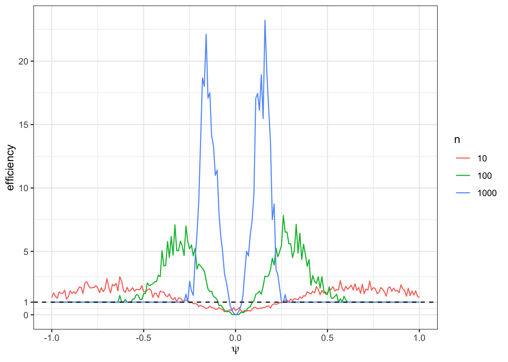
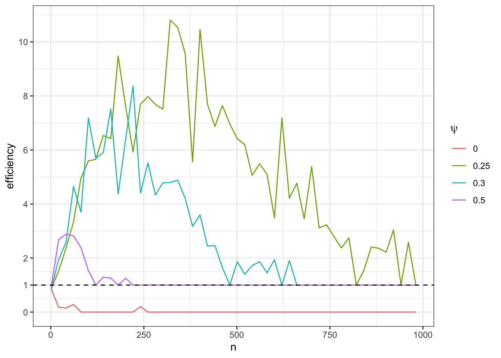
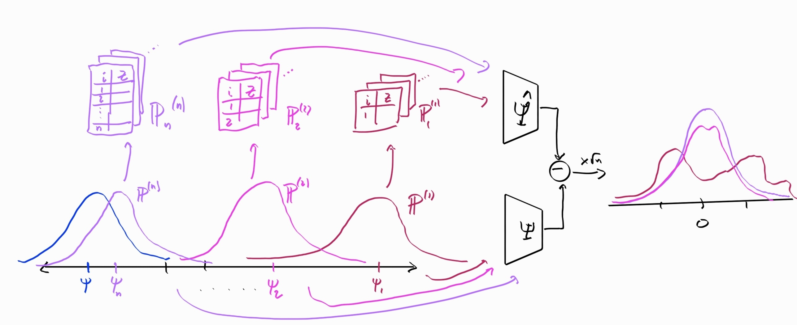
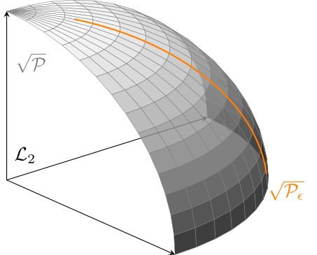
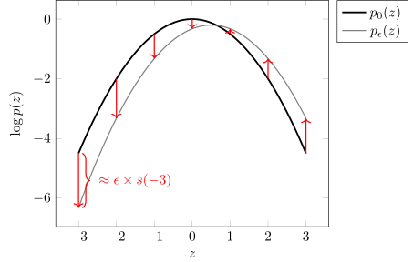
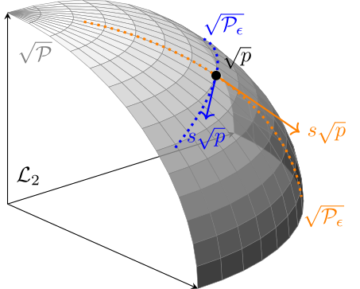
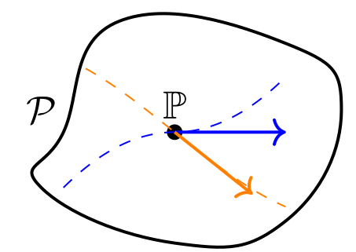

2 Regularity
While restricting ourselves to asymptotically linear estimators is a good start, unfortunately it is not quite enough to develop a sensible theory of optimality. In this section we’ll first argue for why a further restriction is not only sensible but useful. Then we will come up with and refine a definition that suits our needs.
2.1 Hodges’ Estimator
Let’s presume we’re interested in estimating the mean \(\psi = \Psi(\mathbb P) = \mathbb E_{\mathbb P}[Z]\) from \(n\) IID draws of a scalar random variable \(Z\) that we know is normally distributed with standard deviation \(\sigma=1\). Our statistical model is therefore \(\mathcal P = \{\mathsf{N}(\psi, 1): \psi \in \mathbb R\}\), a one-dimensional parametric model. Obviously this is a contrived example where we know a lot about \(Z\), but the point is to show that even in this extremely favorable setting we can be led astray by mathematical arguments that put our attention in the wrong place.
We’ll consider two estimators: \[ \begin{aligned} \hat\psi &= \frac{1}{n}\sum Z_i \\ \tilde\psi &= \begin{cases} \hat\psi & |\hat\psi| > n^{-1/4} \\ 0 & |\hat\psi| \le n^{-1/4} \end{cases} \end{aligned} \]
The first estimator is just the usual sample mean. The second is what is called Hodges’ estimator. When the sample is large, Hodges’ estimator almost always returns the sample mean. But when the sample is small, Hodges’ estimator often ignores the sample mean and returns zero.
Let’s compare the asymptotic sampling distributions of the two. Since \(Z\) are normal random variables with unit variance and mean \(\psi\), we know that the sample mean has the exact distribution \(\mathsf{N}(\psi, 1 / n)\). Thus it follows that \[ \sqrt{n}(\hat\psi - \psi) \rightsquigarrow \mathsf{N}(0, 1) \]
Hodges’ estimator, however, has the following asymptotic distribution:
\[ \sqrt{n}(\hat\psi - \psi) \rightsquigarrow \begin{cases} \mathsf{N}(0, 1) & \psi \ne 0 \\ \mathsf{N}(0, 0) & \psi = 0 \end{cases} \]
Like the sample mean, Hodges’ estimator is definitely asymptotically linear: the influence function is
\[ \phi_{\mathbb P}(z) = \begin{cases} z - \mathbb E[Z] & \mathbb E[Z] \ne 0 \\ 0 & \mathbb E[Z] = 0 \end{cases} \]
which is certainly a \(\mathbb P\)-mean-zero \(\mathcal L_2(\mathbb P)\) function for all \(\mathbb P\) with finite mean of \(Z\). Therefore if we were defining optimality among AL estimators, we would have to consider Hodges’ estimator as a candidate.
The sample mean and Hodges’ estimator are asymptotically the same across most distributions. But in any case where \(\mathbb E[Z] =0\), Hodges’ is clearly better: its variance goes to zero even if blown up by the square root of \(n\) whereas the sample mean’s variance does not. Therefore by these arguments Hodges’ is the better estimator overall.
But if this is true, why do we use the sample mean instead of Hodges’ estimator? And moreover why couldn’t we reason the same way about a Hodges’-style estimator that has a special preference for some other value instead of zero? Wouldn’t that estimator also be better than the sample mean for that special value and otherwise the same?
The reason we don’t use Hodges’ estimator is that the asymptotic arguments hide that this estimator actually performs much worse than the sample mean for most values of \(n\) and most possible distributions of \(Z\). You can see this in a simulation (or work it out analytically):
Code
hodges = function(Z) {
n = length(Z)
ifelse(abs(mean(Z)) > n^(-1/4), mean(Z), 0)
}
sim = function(n, psi) {
Z = rnorm(n, mean=psi)
tibble(
n = n,
psi = psi,
mean = mean(Z),
hodges = hodges(Z)
)
}
params = expand_grid(
n = c(10, 100, 1000),
psi = seq(-1,1, 0.01),
)
1:100 |> # this many times,
map_df(~pmap_df(params, sim)) |> # repeat sim() for each set of params
group_by(n = factor(n), psi) |>
summarize(
mse_mean = mean((mean - psi)^2),
mse_hodges = mean((hodges - psi)^2),
efficiency = mse_hodges / mse_mean
) |>
ggplot() +
geom_line(aes(psi, efficiency, color=n)) +
labs(x = expression(psi)) +
theme_bw() +
scale_y_continuous(
breaks = function(limits) {
b <- pretty(limits) # the usual pretty breaks
sort(unique(c(b, 1))) # but force in 1
}
) +
geom_hline(
yintercept = 1,
colour = "black",
linetype = "dashed"
)The \(y\)-axis of Figure 2.1 shows the relative efficiency of Hodges’ estimator, defined as the ratio of MSEs between Hodges’ estimator and the sample mean: \(\mathbb E[(\tilde\psi - \psi)^2]/\mathbb E[(\hat\psi - \psi)^2]\). If this is greater than one, then Hodges’ estimator is better than the sample mean, if less than one, it is worse.
As you can see, regardless of what \(n\) is, Hodges’ estimator is worse (and sometimes much worse) than the sample mean for the majority of the plotted values of \(\psi\). So then why do the asymptotic arguments suggest that Hodges’ estimator is actually better than the sample mean?
The problem is that the asymptotics are only concerned with the behavior of each estimator at any particular distribution of \(Z\). In our contrived model, the distributions of \(Z\) are all normal with unit variance so a single distibution corresponds to a value of \(\psi\). If you look at a single nonzero point on the \(x\)-axis (say, \(\psi = 1/2\)) and compare the relative efficiency as \(n\) increases you’ll see that it does converge to 1: both estimators are asymptotically equivalent. At the point \(\psi=0\), however, the relative efficiency converges to 0 meaning that Hodge’s estimator is infinitely more efficient at that point asymptotically. We can repeat our simulations but plot them a little differently in order to see this. Instead of plotting efficiency against \(\psi\) and slicing by \(n\), we’ll instead plot efficiency against \(n\) and slice by \(\psi\) (you could imagine a 3D plot with efficiency on the z-axis and \(n\) and \(\psi\) on the x and y).
Code
params = expand_grid(
n = seq(1, 1000, by=20),
psi = c(0, 0.25, 0.3, 0.5)
)
result = 1:100 |>
map_df(~pmap_df(params, sim))
result |>
group_by(n = n, psi = psi) |>
summarize(
mse_mean = mean((mean - psi)^2),
mse_hodges = mean((hodges - psi)^2),
efficiency = mse_hodges / mse_mean
) |>
ggplot() +
geom_line(aes(n, efficiency, color=factor(psi))) +
labs(color=expression(psi)) +
theme_bw() +
scale_y_continuous(
breaks = function(limits) {
b <- pretty(limits) # the usual pretty breaks
sort(unique(c(b, 1))) # but force in 1
}
) +
geom_hline(
yintercept = 1,
colour = "black",
linetype = "dashed"
)
In Figure 2.2 you’ll see that the bad behavior of Hodges’ estimator is temporary for each value of \(\psi \ne 0\). As \(n\) increases, the estimator eventually behaves like the sample mean. Since the asymptotics don’t care about any initial behavior of the sequence, they completely ignore the fact that Hodges’ estimator is usually much worse than the sample mean because those problems are “temporary” as far as the behavior at any fixed distribution is concerned.
The issue with that is that is that the problem doesn’t actually disappear, it just goes to another distribution! As you can see in our first plot, the region of bad behavior simply moves as we increase \(n\). If you’re standing still at a given \(\psi \ne 0\) you’d think everything is fine, but if you look across all values of \(\psi\) you notice that we’re just moving the problem around. That is precisely what the asymptotic arguments ignore: they are incapable of looking at the behavior of each estimator at multiple distributions simultaneously. They only consider a single distribution at a time. We call this pointwise asymptotic behavior because we’re looking at each “point” (distribution) \(\mathbb P\) in the model \(\mathcal P\) one-at-a-time. Once we look across all values of \(\psi\) at the same time, it’s clear that Hodges’ estimator is much worse than the sample mean.
Asymptotic linearity is only concerned with pointwise convergence, but to prevent the bad behavior of Hodges’ estimator we need some kind of uniform convergence: we’d like the sampling distributions of the estimates at each \(\mathbb P\) to “arrive” or “approach” their limits at the same time. Physically you can imagine flattening a marshmallow: if you push down at a point on the marshmallow (e.g. by squeezing it between your thumb and index finger), the mass will can just go elsewhere. But if you sandwich it between your palms, you ensure that it gets squeezed down everywhere at the same time. That’s “uniform” convergence.
Estimators like Hodges’ estimator are called superefficient for reasons that will be explained in a few sections’ time. In general, superefficient estimators perform better than other estimators on some very small set of distributions at the cost of abitrarily bad performance that moves around over the other distributions as \(n\) increases. We want to rule out that sort of behavior so that we can compare estimators asymptotically without getting burned by their finite-sample behavior.
2.2 Regularity in a Parametric Model
We’ve identified a problem with looking only at AL estimators: there are always AL estimators that look good in terms of their pointwise asymptotics but are actually bad because they just move the problem around in a way that makes it invisible to the asymptotics.
To rule this out, we’ll impose an addition condition called regularity. Informally, regularity means that the estimator approaches its limit distribution in a (locally) uniform way across the model so that asymptotics can’t hide bad performance that moves around the model.
We will start with a toy definition of regularity that we will build up to the formal definition in the next few sections. That will require us to introduce and explain a few abstractions but these will also come in handy later so it’s worth doing. For now, though, here’s a first draft:
First, let’s clarify the notation. Since \(\mathbb{P}_n\) is used to denote the (random) empirical distribution of \(n\) draws from a distribution \(\mathbb{P}\), I’m using superscripts to denote a sequence of (fixed) distributions \(\mathbb{P}^{(1)}, \mathbb{P}^{(2)} \dots \mathbb{P}^{(n)} \dots\). In this convention, \(\mathbb{P}^{(m)}_n\) would be the empirical distribution of \(n\) draws from distribution \(\mathbb{P}^{(m)}\).
Now we turn to Definition 2.5. The first step in undestanding its meaning is to understand the following standard asymptotic statment which says that \(\hat\psi_n = \hat\Psi(\mathbb{P}^{(n)})\) is a \(\sqrt{n}\)-asymptotically normal estimate of \(\psi = \Psi(\mathbb{P})\): \[ \sqrt{n}\left( \hat\Psi(\mathbb{P}_n) - \Psi(\mathbb{P}) \right) \rightsquigarrow \mathsf{N}(0, 1) \]
For each sample size \(n\), the left-hand side here is a random variable corresponding to the scaled and centered sampling distribution of the estimator, drawing the \(n\) data points from the distribution \(\mathbb P\). You can imagine standing still at the distribution \(\mathbb{P}\in \mathcal P\): first drawing many datasets of size \(n=1\) and passing them each through \(\hat\Psi\) to generate the sampling distribution of \(\hat\psi_1 - \psi\), then drawing many datasets of size \(n=2\) to generate the distribution of \(\hat\psi_2 -\psi\), etc. We’re just (repeatedly) drawing larger and larger datasets from the same distribution to feed through the estimator and comparing the results to the estimand. The right-hand side says that those (centered and scaled) sampling distributions look more and more like the standard normal the larger \(n\) gets.
Now compare that to our definition of regularity. The only difference is that instead of \(\hat\Psi(\mathbb{P}_n)\) we have \(\hat\Psi(\mathbb{P}^{(n)}_n)\) and instead of \(\Psi(\mathbb{P})\) we have \(\Psi(\mathbb{P}^{(n)})\). What that means is that we are no longer necessarily “standing still” at a single distribution \(\mathbb{P}\in \mathcal P\) while drawing larger datasets. Instead, we are typically moving closer to \(\mathbb{P}\) as we increase the size of our draws.
Concretely, we start at \(\mathbb{P}^{(1)} = \mathsf{N}(\psi^{(1)},1)\). We draw many datasets of size \(n=1\) from \(\mathbb{P}^{(1)} = \mathsf{N}(\psi^{(1)},1)\) and pass them each through \(\hat\Psi\), comparing the results \(\hat\psi^{(1)}_1\) to the current ground truth \(\psi^{(1)}\). Now we move to \(\mathbb{P}^{(2)} = \mathsf{N}(^{(2)}, 1)\). We draw many datasets of size \(n=2\) from \(\mathbb{P}^{(2)}\) and pass them each through \(\hat\Psi\), comparing the results to the new ground truth \(\psi^{(2)}\). We continue like this: at each \(n\), we arrive at \(\mathbb{P}^{(n)} = \mathsf{N}(\psi^{(n)}, 1)\), draw many datasets of size \(n\) from this distribution, and generate the sampling distribution of \(\hat\psi^{(n)}_n - \psi^{(n)}\) comparing the current estimates to the current ground truth.

To summarize: the process in the definition of regularity is the same process as in the standard \(\sqrt{n}\) asymptotic convergence statement. The only difference is that we’re now allowed to shift the data generating distribution under the estimator and estimand rather than leaving it fixed. In the definition of regularity, however, the right-hand side must always be the same fixed distribution \(\mathbb D\). In other words, no matter how we move the data-generating distribution around towards \(\mathbb{P}\) while we increase the sample size, the estimator behaves more and more like it would if we stood still at \(\mathbb{P}\). The fact that the limit is the same regardless of whether we’re moving the ground truth distribution around (as long as it “converges” to the true distribution) is the key to regularity. Satisfying that property is what forces our estimator to have (locally) uniformly good convergence across distributions and prevents the bad behavior of Hodges’ estimator.
The fact that regularity is only concerned with sequences \(\psi^{(n)}\) such that \(\sqrt n (\psi^{(n)} - \psi) \to 0\) makes it more lenient than if we required the same kind of asymptotic convergence in distribution along all sequences \(\psi^{(n)} \to \psi\). We want to a-priori rule out estimators whose bad performance will escape asymptotic detection, but we want to do this in the most lenient way possible so that we don’t accidentally rule out some good estimators too. That’s why we say that regularity enforces a kind of local uniform convergence in distribution: all the sequences of distributions we want to check still converge (quickly) to the distribution of interest. Another way to think of this is that the sequences we care about are all quickly shrinking perturbations of the distribution of interest.
The definition we’re working with at the moment is specific to the normal model \(\mathcal P= \{\mathsf{N}(\psi, 1):\psi \in \mathbb{R}\}\). We built a very specific sequence of distributions \(\mathbb{P}^{(n)} = \mathsf{N}(\psi^{(n)}, 1)\) that get closer and closer to the true distribution. Moreover we required the “distance” to the true distribution to close at faster than the \(n^{-1/2}\) rate. Our challenge in the proceeding sections will be figuring out a sensible way to generalize our definition to nonparametric models. But to do that we’ll first have to establish some notions of “geometry” in that setting.
2.3 Paths and Scores
Our goal at our moment is to generalize our definition of regularity by establishing some “geometry” in our model so we can talk about a sequence of distributions converging in some required sense. In our current definition, a model \(\mathcal P\) is just a set of distributions: there is no sense of direction or distance that is inherent to it. I think of a naked model like that as a big soup of distributions: everything is free to jumble around. We need a little more structure to make sense of regularity in a nonparametric model.
For the remainder of this section we’ll work within models where every distribution \(\mathbb{P}\) has a density function \(p\). Formally, we will assume that all our distributions are absolutely continuous with respect to Lebesgue measure (don’t worry if you don’t know what that means). The results we will discuss actually do not depend on that assumption: the theory works exactly the same way for general models. However, the intuition is harder to get across in the general case, especially for readers who are new to measure-theoretic probability. I’ll abuse notation where convenient and use \(\mathcal P\) to refer to the set of densities \(p\) as well as the set of distributions (measures) \(\mathbb{P}\). If you know some measure theory, you can for now imagine that all distribuitons in the model have a density with respect to an arbitrary dominating measure \(\bar{\mathbb{P}}\) and replace references to \(\mathcal{L}_2\) below with \(\mathcal{L}_2(\bar{\mathbb{P}})\). Throughout the rest of the book I will also write integrals like \(\int f(z)\ p(z) \mathop{}\!\mathrm{d}z\) with the standard differential \(\mathop{}\!\mathrm{d}z\) so that they are comprehensible without measure theory. If you know measure theory, you can replace these with Lebesgue integrals with respect to the relevant dominating measure.
The first step to imposing a structure that will be useful to us is to think in terms of density functions rather than distributions (measures). If all the elements of the model have densities, we can think of the model as a collection of densities. Since densities are functions, we might be tempted to say they are elements of \(\mathcal{L}_2\) because then everything is great: we have lengths, we have angles, we have all sorts of useful identities and relationships. But unfortunately that’s not immediately possible. Recall Definition B.2 that \(\mathcal{L}_2\) only includes functions that are square-integrable (have finite norm). However, there are some density functions for which \(\int p(z) \mathop{}\!\mathrm{d}z\) may blow up.
Example 2.1 The function \(p(z) = \frac{1(0 < z <1)}{2\sqrt z}\) is a valid density because it is positive and integrates to one: \[ \frac{1}{2}\int_0^1 \frac{\mathop{}\!\mathrm{d}z}{\sqrt z} = 1. \] But it is not square-integrable: the integral of its square is \[ \frac{1}{4} \int_0^1 \frac{\mathop{}\!\mathrm{d}z}{z} = \infty. \]
Thankfully, this is an easy problem to fix! Instead of working with the density functions directly, we can work with the root densities. Since \(\int p \mathop{}\!\mathrm{d}z = 1\), it’s clear that \(\int (\sqrt p)^2 \mathop{}\!\mathrm{d}z = 1\). In other words, the square root of any density function is square-integrable and thus a function in \(\mathcal{L}_2\). Moreover, all of these root densities have unit norm in \(\mathcal{L}_2\)! I’ll use the symbol \(\sqrt{\mathcal P} = \{\sqrt p : p \in \mathcal P\}\) to denote the collection of square roots of densities in the model. Because \(\sqrt{\mathcal P}\) contains only positively valued functions with unit norm, we can visualize it as some subset of the unit ball in the “positive orthant” of \(\mathcal{L}_2\). In describing “orthants” I am drawing on the intuition described in Section B.1.1 where I imagine the “axes” of \(\mathcal{L}_2\) corresponding to the possible arguments of the function.

In addition to the model, in Figure 2.4 you can also see what we’re going to call a differentiable path through the model. A path (also called a one-dimensional submodel) is intuitively what it sounds like: if you were standing at a point \(p\) (or \(\mathbb{P}\)) in the model and you started walking in some direction, you’d be tracing out an example of a path. Formally, a path is a one-dimensional set of distributions in the model, parametrized by some \(\epsilon \in \mathbb{R}\). By “parametrized” I mean that every distribution in this set can be assigned a unique number \(\epsilon\). If you consider \(p_0\) (or \(\mathbb{P}_0\)) to be the “start” of the path, you can think of the parameter \(\epsilon\) as encoding “how far” you are along the path (and perhaps in which direction). The density (or distribution) indexed by the particular number \(\epsilon\) is often written \(p_\epsilon\) (or \(\mathbb{P}_\epsilon\)). Paths are going to be very useful tools for us to define what we mean by distributions getting close to each other in a sense that is required for a general definition of regularity. Paths will also come up in many other places so it is worth taking some time to understand them here.
Example 2.2 Presume the model is the set of all continuous distributions. Pick any two points \(p, p' \in \mathcal P\). Then the set of densities \(\{p: p = \epsilon p' + (1-\epsilon) p\}\) is a path parametrized by \(\epsilon\in [0,1]\). You can think of this as the straight-line path starting at \(p\) (at \(\epsilon=0\)) and ending at \(p'\) (at \(\epsilon=1\)). This is the canonical exmple of a path, which we will call a convex path.
Example 2.3 Presume the model includes all normal distributions. Then the set of distributions corresponding to \(\mathsf{N}(\epsilon, 1)\) is a path parametrized by \(\epsilon\in \mathbb{R}\).
Example 2.4 Presume the model is the set of all densities. For \(\epsilon\le 0\) let \(p_\epsilon\) be the density of \(\mathsf{N}(\epsilon, 1)\) and for \(0 < \epsilon\) let \(p_\epsilon\) be the density \(\mathsf{Unif}(0,1+\epsilon)\).
It’s important that every element of the path is an element of the model. A path, by definition, stays within the model. Later we will see that when we have a smaller (more restricted) model we can sometimes construct estimators that have smaller asymptotic variance. This should make sense to you: the more you already know and can encode as a modeling assumption, the less you have to rely on the data and the more confident you can be in your result. Mathematically, the way that we show this is by arguing that there are “fewer” paths passing through a given point when the model is more restricted. If paths were allowed to “leave” the model, this wouldn’t be the case.
Our definition of path is very general. Too general, in fact, to correspond nicely to the mental model we have from Figure 2.4. As Example 2.4 shows, we can easily constuct paths that don’t feel “continuous”. To make a definition that reflects our picture of a continuous, smooth path through the model we need to impose more conditions.
For example, we might impose that paths be continuous in the sense that we would want the \(\mathcal{L}_2\) distance between two (root) distributions \(\sqrt{p_{0}}\) and \(\sqrt{p_{\epsilon}}\) along the path to go to zero if \(\epsilon\to \epsilon_0\). That would rule out the path in Example 2.4. But it turns out that what we need in order to generate a useful theory of efficiency is not just continuity, but also differentiability. That is, we are interested in continuous paths, but specifically those that do not have any “kinks”. By that we mean that we’re interested in differentiable paths. Since we’re talking about a path through infinite-dimensional space, let’s spend a little time developing our intuition about derivatives before we define a differentiable path.
Given a function \(f: \mathbb{R}\to \mathbb{R}\), recall that its derivative at the point \(x=0\) (if it exists) is defined as \(\dot f_0 = \underset{x\to 0}{\lim} \frac{f(0) - f(x)}{x}\) . Another way to write this is that there exists a number \(\dot f_0\) such that \[ \left| \frac{f(0) - f(x)}{x} - \dot f_0 \right| \overset{x \to 0}{\to} 0 . \]
By \(x \to 0\) we mean that the statment holds when replaced by any sequence \(x_n\) which converges to zero.
The derivative is usually thought of the “slope” of the function \(f\) at the point in question. You can think of it also as the “direction” that \(f\) is going at that point: in the simplest interpretation, a positive derivative means that \(f\) is increasing (going up), a negative derivative means that it’s decreasing (going down). The magnitude of the derivative gives the rate of increase or decrease.
Let’s generalize this a bit. You should recognize that the value of the derivative \(\dot f_0\) is a number specifically because the function \(f\) outputs real numbers. If \(f\) returned finite-dimensional vectors, for example, then the numerator in the “slope” fraction \(\frac{f(0) - f(x)}{x}\) would also be a vector and the derivative \(\dot f_0\) would also have to be a vector in order for the difference of the two to be defined. Now that we’re working with the difference of two vectors instead of the difference of two numbers, the appropriate measure of distance is a norm on the vector space rather than the absolute value (which is the usual norm on \(\mathbb{R}\)). To formalize this, let \(\mathcal V\) be a vector space with a norm \(\|\cdot \|_{\mathcal V}\). We’ll say that \(f: \mathbb{R}\to \mathcal V\) is differentiable at zero if there is some element \(\dot f_0 \in \mathcal V\) such that
\[ \left\| \frac{f(0) - f(x)}{x} - \dot f_0 \right\|_{\mathcal{V}} \overset{x \to 0}\to 0 . \]
Paths, as we have defined them (Definition 2.2), can be thought of as functions mapping a value \(\epsilon\in \mathbb{R}\) to a (root) density \(\sqrt{p_\epsilon} \in \mathcal{L}_2\). We can therefore apply the above reasoning, letting \(\epsilon\) play the role of \(x\), letting the mapping \(\epsilon\mapsto \sqrt{p_\epsilon}\) play the role of \(f\), and letting \(\mathcal{L}_2\) play the role of the generic vector space \(\mathcal V\). Since in this case \(f\) maps numbers to \(\mathcal{L}_2\), the derivative of \(f\) will also be an element of \(\mathcal{L}_2\), i.e. a square-integrable function.
Sometimes you may also see the DQM condition written out more explicitly and with the score function, e.g. \[ \int \left[ \frac{\sqrt{p_\epsilon(z)} - \sqrt{p_0(z)}}{\epsilon} - \frac{1}{2} s(z) \sqrt{p_0(z)} \right]^2 \mathop{}\!\mathrm{d}z \overset{\epsilon\to 0}{\to} 0. \] This is equivalent but in my opinion makes it opaque that \(\frac{1}{2} s(z) \sqrt{p_0(z)}\) just represents the \(\mathbb{R}\to \mathcal{L}_2\) derivative of \(\epsilon\mapsto \sqrt{p_\epsilon}\).
Instead of demanding that \(\epsilon\mapsto \sqrt{p_\epsilon}\) be differentiable in the mean-squared sense at \(\epsilon=0\), we might instead consider asking for the existence of the derivative \(\frac{\mathop{}\!\mathrm{d}}{\mathop{}\!\mathrm{d}\epsilon}\sqrt{p_\epsilon(z)}\) at every single point \(z\). When both the \(z\)-pointwise derivative \(\frac{\mathop{}\!\mathrm{d}}{\mathop{}\!\mathrm{d}\epsilon}\sqrt{p_\epsilon(z)}\) and the mean-square derivative \(\overset{\scriptscriptstyle\bullet}{\sqrt{p_\epsilon}}\) exist they certainly agree with each other, but sometimes one exists and not the other. There are paths that are not \(z\)-pointwise differentiable but are still DQM: since the square-mean derivative integrates over the squared difference of the finite-\(\epsilon\) “slope” term and the limit term in \(z\), it does not care if that slope term blows up for some points \(z\): they simply fall out of the integral. Similarly there are \(z\)-pointwise differentiable paths that are not DQM: refer to the results and examples in Section 7.2 of Van der Vaart (2000) if you are curious to learn more. The reason we care about DQM is because it will turn out later that this is precisely the condition required to establish something called local asymptotic normality which we will use to prove a very important result.
Even though DQM is the condition we need, it’s still informative to consider the pointwise derivative because it explains why we write the derivative as \(\overset{\scriptscriptstyle\bullet}{\sqrt{p_\epsilon}} = \frac{1}{2} s \sqrt{p_0}\) using the score function \(s\). Starting with the pointwise derivative and using the chain rule,
\[ \frac{\mathop{}\!\mathrm{d}}{\mathop{}\!\mathrm{d}\epsilon}\sqrt{p_\epsilon(z)} = \frac{1}{2}(p_\epsilon(z))^{-1/2} \frac{\mathop{}\!\mathrm{d}}{\mathop{}\!\mathrm{d}\epsilon} p_\epsilon(z) = \frac{1}{2} \sqrt{p_\epsilon(z)} \frac{\mathop{}\!\mathrm{d}}{\mathop{}\!\mathrm{d}\epsilon} \log p_\epsilon(z) \]
where in the last line we used \(\frac{\mathop{}\!\mathrm{d}}{\mathop{}\!\mathrm{d}\epsilon} \log p_\epsilon(z) = \frac{1}{p_\epsilon(z)} \frac{\mathop{}\!\mathrm{d}}{\mathop{}\!\mathrm{d}\epsilon} p_\epsilon\). Therefore, when the pointwise derivative exists, the score function \(s\) is equal to the rate of change of the log-likelihood at \(\epsilon=0\). For almost all practical purposes you can take this to be the definition of the score for a path at \(p_0\), i.e. \(s(z) = \frac{\mathop{}\!\mathrm{d}}{\mathop{}\!\mathrm{d}\epsilon} \log p_\epsilon(z) |_{\epsilon=0}\). From a pointwise perspective, the score is telling you how much to increase or decrease the value of the (log) density at each value \(z\) in order to move from one density in the path to another. This is shown in Figure 2.5.

I find it most helpful to think of the score function at a point \(p_0\) in the path as the “direction” that the path is moving when it passes through that point. You can see this is the case geometrically in Figure 2.6. In the figure I’ve drawn \(s \sqrt{p_0}\) as the tangent vector to the path at the point \(\sqrt{p_0}\). This is justified by the fact that \(\frac{1}{2}s \sqrt{p_0}\) is the derivative of \(\epsilon\mapsto \sqrt{p_\epsilon}\) and therefore encodes the “direction” that function (path) is going. Another way of seeing it is that \(\frac{1}{2} s \sqrt{p_0}\) is the “slope” of the best linear approximation to \(\epsilon\mapsto \sqrt{p_\epsilon}\) at the point \(\sqrt{p_0}\). So, roughly speaking, \[ \sqrt{p_\epsilon} \approx \sqrt{p_0} + \frac{1}{2} \epsilon(s \sqrt{p_0}). \] This is exactly what I’ve drawn in Figure 2.6: the actual path of densities \(\sqrt p_\epsilon\) (the left-hand side of the above display) and what would happen if you followed the current direction \(s \sqrt{p}\) starting at \(\sqrt p\) (the right-hand side).

To make an analogy, let’s say you were following a path from New York to San Francisco. A “path” would be equivalent to a line on the map indicating the route you take. Your “score” at some point along the route would be the direction that the route tells you to go in at that point (e.g. in New York your “score” might be “West”).
Technically it’s not the scores themselves that are tangent to paths in the model, but the scores times the current root-density that are tangent to the root-path. Nonetheless we often speak informally and talk about the scores themselves being tangent, etc, ignoring the fact that we had to take roots of the densities in our model to get everything embedded into \(\mathcal{L}_2\). In line with that oversimplification, I sometimes find it helpful to think in terms of or refer to cartoons like Figure 2.7.

Example 2.5 Fix an initial point \(p\) and final point \(p'\) in a model and consider the convex path \(\{p: \mathbb{P}= \epsilon p' + (1-\epsilon) p\}\) discussed in Example 2.2. For this path, the (pointwise derivative version of the) score at \(\epsilon = 0\) is defined and is equal to \[ \begin{aligned} s &= \frac{\mathop{}\!\mathrm{d}}{\mathop{}\!\mathrm{d}\epsilon} \log \big( p + \epsilon (p'-p) \big) \bigg|_{\epsilon=0} \\ &= \frac{1}{p + \epsilon(p'-p)} (p'-p) \bigg|_{\epsilon=0}\\ &= \frac{p'}{p} -1 \end{aligned} \] A little algebra shows that this path can also be written as \(p_\epsilon= (1+\epsilon s) p\).
Paths and scores are extremely useful objects in nonparametric asymptotics and we will use them many times in the rest of the book.
2.4 Regularity
Equppied with these tools we can craft a definition of regularity that is more general than Definition 2.1. In this section I’ll return using superscripts to denote a sequence of distributions so that the subscript \(n\) can indicate the empirical distribution. For example, in the context of a path, I’ll use \(\mathbb{P}^{(\epsilon)}\) rather than \(\mathbb{P}_\epsilon\) (and I’ll use distributions \(\mathbb{P}\) rather than densities \(p\) since we can now be more general).
First let’s generalize the model. In our previous definition we had the normal model \(\mathcal P= \{\mathsf{N}(\psi, 1): \psi \in \mathbb{R}\}\). This is actually one example of a differentiable path within a larger, possibly nonparametric model (e.g. all continuous distributions)! So let’s replace the normal model with a generic differentiable path that includes the true distribution (at \(\mathbb{P}_0\) so \(\epsilon= 0\) is the true value, for convenience). Next, we can replace the condition that \(\sqrt n (\psi^{(n)} - \psi) \to 0\) with an equivalent root-\(n\) convergence \(\sqrt n (\epsilon^{(n)} - 0) \to 0\) of the parameter in the path. That yeilds our general pathwise definition of regularity:
In other words, an estimator is regular in a given path if the limiting distribution doesn’t depend on what distributions you draw from asymptotically as long as they move to true distribution quickly enough. You should refer to Figure 2.3 to review how the asymptotics work under a shifting data-generating distribution. It is that “uniformity” across distributions in the path that prevents the bad behavior of Hodges’ estimator. That behavior escapes detection in “pointwise” asymptotic arguments where the distribution is fixed.
To generalize our definition to a larger, possibly nonparametric model, we simply require that the limiting distribution \(\mathbb D\) is also the same no matter which differentible path through \(\mathbb{P}\) you choose. In other words, we require the “uniformity” of convergence in distribution across all sequences of distributions converging quickly to the truth along differentiable paths.
We do not care about the behavior of the estimator along non-differentiable paths because these paths don’t go smoothly towards the true distribution. It would not be sensible to assume that any estimator should behave in a predictable or consistent way if we moved along a non-differentiable path.
Proving that an estimator is not regular is only as difficult as finding a single differentiable path for which it is not regular. We already did that for Hodges’ estimator in Exercise 2.5. To directly prove an estimator is regular you have to prove regularity for all differentiable paths. There are ways to do this but more often it is easier to prove regularity indirectly. In the next chapter we will prove a powerful result that lets us characterize the set of all regular, asymptotically linear estimators. We can then show an estimator is regular by proving it is asymptotically linear and also meets the conditions required for membership in that set. More imporantly, the characterization we develop will let us precisely identify the most efficient regular and asymptotically linear estimator.
2.5 Is Regularity Too Strict?
By restricting our attention to regular asymptotically linear estimators we are trying rule out the kind of bad performance exhibited by Hodges’ estimator. But Hodges’ estimator is just one example. It’s rational to ask whether there are any good estimators that regularity rules out. In practice, the short answer is no, but in theory the long answer is that it depends on your perspective. I won’t give a detailed account of all the arguments but I will give a brief summary that should at a minimum hold you over until you can dig deeper. Nonetheless, if you are interested in these questions I recommend revisiting them after you have digested the practical implications of efficiency theory that we’ll discuss in the next chapters.
The first argument that usually gets rolled out in favor of enforcing regularity is that irregular estimators can only perform asymptotically better than regular estimators on an “infinitesimally small” fraction of all possible distributions in any parametric model. We saw this for Hodges’ estimator: it has the same asymptotic performance as the sample mean in the normal model everywhere except for the single distribution where \(\psi = 0\). That’s the only point at which Hodges’ estimator can beat the sample mean in large-enough samples. The theoretical justification for this claim is something called the almost-everywhere (or Hajek-Le Cam) convolution theorem. You can see section 8.6 of Van der Vaart (2000) for further details. The idea is that if irregular estimators can only beat regular estimators in very rare cases, it’s no big deal to exclude them. As a bonus, the convolution theorem also shows that the most efficient regular estimator is asymptotically linear. This justifies restricting our search to asymptotically linear estimators once we’re already comfortable with regularity since we lose nothing (asymptotically) by the further restriction.
A second argument for regularity follows from the local asymptotic minimax theorem (Theorem 8.11 and Lemma 8.13 in Van der Vaart (2000)). Given an estimate \(\hat\psi\), we can imagine calculating a scaled error \(E_{n,\mathbb{P}, \hat\Psi}=\sqrt n (\hat\psi - \psi)\). This error is indexed by the sample size \(n\), the distribution \(\mathbb{P}\) we’re drawing data from and calculating the estimand \(\psi\) from, and of course the estimator \(\hat\Psi\). Since \(\hat\psi\) is random, \(E_{n, \mathbb P, \hat\Psi}\) is also a random variable: we get a different error with a different sampled dataset. We can also define a loss function \(l: \mathbb{R}\to \mathbb{R}\) which takes the error and returns its “cost”. We’ll require that the loss be “bowl-shaped”: symmetric around \(0\) and either increasing or flat moving away from zero. For example, we might use the squared loss function \(l(e) = e^2\) if we want to strongly penalize large errors but be relatively more lenient towards small errors, or we could use \(l(e) = 1(|e|>c)\) for a constant penalty outside a region and no penalty within it.
The local asymptotic minimax theorem is concerned with the expected loss \(\mathbb{E}_{\mathbb{P}}[l(E_{n,\mathbb{P}, \hat\Psi})]\). Clearly we would like to find an estimator that makes the expected loss as small as possible. But the theorem tells us that there is a limit to how low the expected loss can get if we want the loss to be uniformly low in some sense around a distribution \(\mathbb{P}\). Let \(\mathbb{P}^{(n)}\) denote any sequence \(\mathbb{P}^{(\epsilon_n)}\) in a differentiable path with \(\mathbb{P}_0 = \mathbb{P}\) such that \(\sqrt{n} \epsilon \to 0\). Informally, the theorem establishes that in most models, if we consider a large enough set of possible differentiable paths and sequences and take \(n\) to be large enough, then there is no estimator for which the worst-case value (over paths) of \(\mathbb{E}_{\mathbb{P}^{(n)}}[l(E_{n,\mathbb{P}^{(n)}, \hat\Psi})]\) can be meaningfully better than \(\mathbb{E}_{Z\sim \mathsf{N}(0,\sigma_{\mathbb{P}}^2)}[l(Z)]\). The quantity \(\mathbb{E}_{Z\sim \mathsf{N}(0,\sigma_{\mathbb{P}}^2)}[l(Z)]\) is a sort of universal “speed limit” for good locally-uniform estimation of the estimand at \(\mathbb{P}\) as measured by the loss \(l\). In the next few chapters we’ll say a lot more about the mysterious quantity \(\sigma_{\mathbb{P}}^2\) and how to derive it.
It’s natural to ask whether there are estimators that can meet this bound, i.e. whether there are estimators that are locally asymptotically minimax for a loss \(l\). If such an estimator were available, there would be very good reason to prefer it over alternatives. The second part of the local asymptotic minimax theorem establishes that, roughly speaking, only regular estimators can be locally asymptotically minimax for scalar estimands. One implication of this theorem is that the undesireable behavior exhibited by Hodges’ estimator is characteristic of all superefficient estimators. If there is no irregular locally asymptotically minimax estimator, that means that irregular estimators all have regions of bad performance with in the model that shift towards the point of superefficiency as \(n\) increases.
Together, the convolution and local asymptotic minimax theorem provide strong reasons to prefer regular estimators, but ultimately both are asymptotic statements and say nothing about how irregular estimators might perform in finite samples. Moreover, parts of the local asymptotic minimax theorem don’t hold if the estimand is a vector rather than a scalar. For example, the James-Stein estimator is an irregular estimator of a vector-valued mean that also locally asymptotically minimax (in a sense defined for vector estimands) for the squared error loss (see Section 8.8 of Van der Vaart (2000) or Chapter 2 of Ibragimov and Has’ Minskii (2013)). But even this is a qualified improvement: while James-Stein improves on the sample mean for squared error loss, there are other losses for which it can be much worse.
Ultimately, the strongest argument in favor of assuming regularity is a practical one: if you assume regularity, you get a very clear theory of optimality that works in immense generality for many statistical models and estimands. It’s possible to cook up small-smaple scenarios where irregular estimators can win, but given a general setup and without very specific assumptions it’s not usually clear how to generate a good irregular estimator de-novo. Moreover it can be difficult to characterize the sampling distribution of irregular estimators, making it hard to construct confidence intervals and p-values. In contrast, our efficiency theory for regular estimators will allow us to build great estimators with easy ways to do inference for essentially any situation.